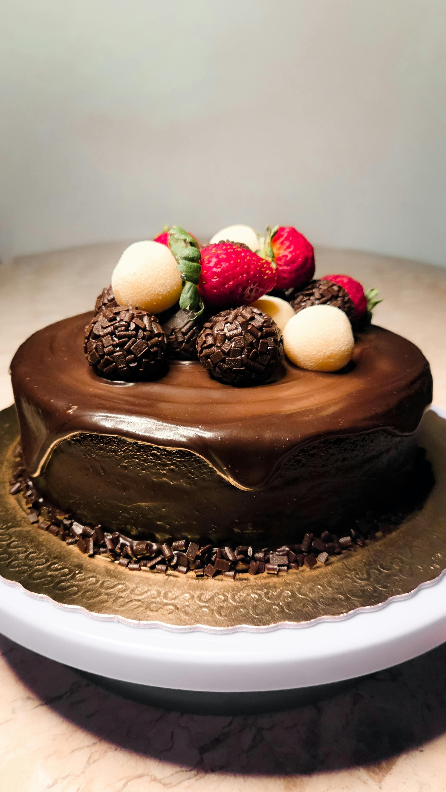
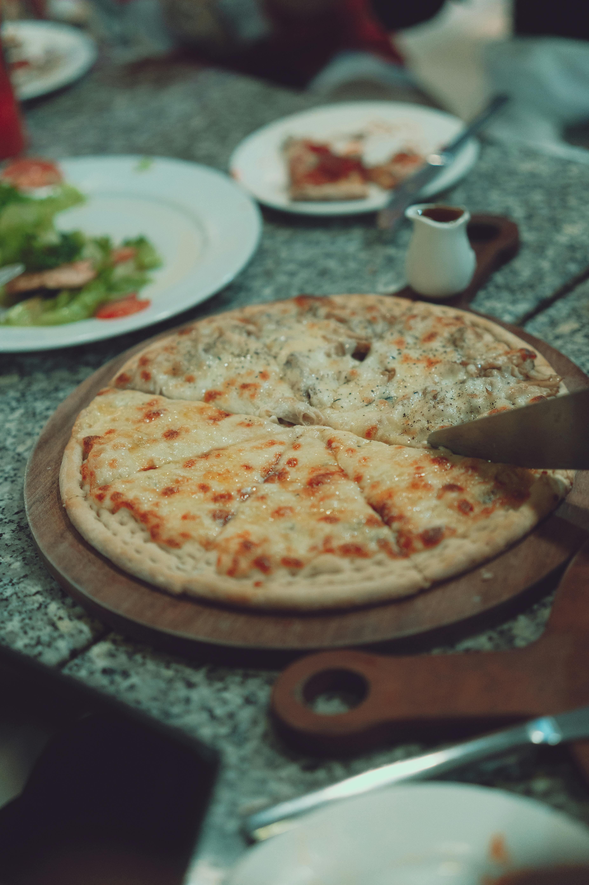
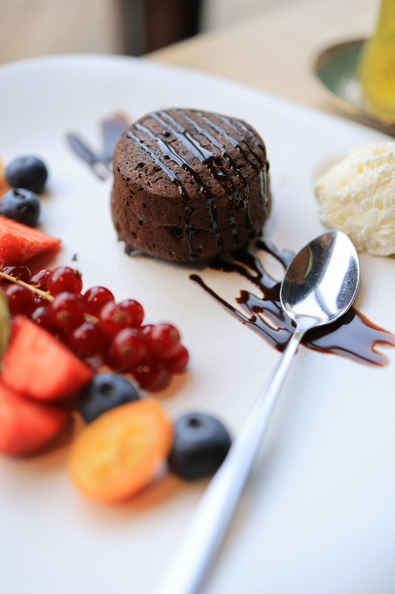

Receita de bolo

Um delicioso bolo de chocolate fofinho e fácil de fazer.
Ingredientes: - 2 xícaras de farinha - 1 xícara de chocolate em pó - 3 ovos - 1 xícara de açúcar - 1 xícara de leite Modo de preparo: Misture todos os ingredientes até formar uma massa homogênea. Leve ao forno por aproximadamente 40 minutos a 180 graus.
Receita de Pizza

Pizza artesanal com molho de tomate e queijo derretido.
Ingredientes: - Massa de pizza - Molho de tomate - Mussarela - Tomate - Orégano Modo de preparo: Abra a massa, adicione o molho e os recheios. Leve ao forno até o queijo derreter e a massa dourar.
Receita Petit gateau

Sobremesa francesa com recheio cremoso de chocolate.
Ingredientes: - 200g de chocolate meio amargo - 2 ovos - 2 colheres de manteiga - 1/2 xícara de açúcar - 2 colheres de farinha Modo de preparo: Misture os ingredientes e asse por cerca de 10 minutos. O centro deve ficar cremoso.